Таланты Капитана
|
Охотник за головами
Даёт на 15% больше опыта и на 15% больше денег за задания типа "Чудовище" или "Гнездо". Вдохновитель
Относится ко всей команде: Скорость освоения навыков +25% 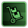Эксперт по логистике
Даёт на 20% больше опыта и на 20% больше денег за задания типа "Груз" или "Перевозка пассажиров". Дарование
Скорость освоения навыков +50% Бродячий торговец
Относится ко всей команде: В продаже есть дополнительные предметы: 3. Ценность продажи +20% Если таких талантов несколько, эффект не суммируется. Ветеран
Даёт 20 к навыку Управления и 5 к остальным навыкам. Скорость ремонта +10% |
|
Товарищество
Пока не один член экипажа не погиб во время миссии, вы будете получать +10% опыта и +5% сопротивление физическому урону. Смерти помощников не считаются. 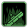На дно
Находясь на своей подлодке, которая на 50% затоплена, вы получаете +50% к скорости плавания и +50% к скорости ремонта корпуса на 60 сек. Аварийные манёвры
Когда монстр повреждает вашу подлодку, вы получаете максимальный навык управления на 5 сек. Оружейник
Доступен рецепт: Револьвер, Патрон револьвера. Безымянный моряк
Вы получаете дополнительно 20 к навыку Медицина. Доступен рецепт: Сигара. Устойчивая мелодия
Когда вы играете на губной гармошке в течении 10 с. или дольше, Устойчивость к психозу у вас и союзников рядом повышается на +100% на 60 с. |
| СТРЕЛОК | ШКИПЕР | ПОЛИТИК |
|---|---|---|
|
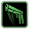Быстрый стрелок
Если вы применяли пистолет более 8 сек. назад, ваш следующий выстрел из пистолета нанесёт на 25% больше урона. Снижает штраф за ношение стрелкового оружия в обеих руках на 50%. |
По примеру
Пока вы живы, у всех членов команды высокая мораль, которая даёт такие преимущества: Скорость ремонта +20% Скорость ремонта корпуса +20% Скорость передвижения +5% |
Благодарности
После завершения хотя бы одной миссии вы получаете благодарность. Применив благодарность к другому персонажу, вы дадите ему 275 опыта. |
|
Помощник
Помощники рядом получают +20 к навыку Управление и +20 к навыку Оружие, и повышают эти навыки вдвое быстрее.
Одинокий волк
Если рядом нет членов команды, вы получаете: Устойчивость к физическому урону +20% Устойчивость к оглушению +20% Исходящий урон в ближнем бою +20% |
Кормчий
Даёт +30 к навыку Управления. Повышает эффективность двигателей и насосов на 20%. Если таких талантов несколько, эффект не суммируется. |
Склонность
Репутация с фракциями повышается на 50% быстрее. Выполняя задания для поддерживаемой фракции, вы получаете на 10% больше кредитов. Если таких талантов несколько, эффект не суммируется. Поддерживаемая фракция: фракция, в которой у вас наивысшая репутация.
Ваша репутация...
Заходя в новый аванпост, во фракции которого у вас хорошая репутация, вы получаете 200 кред. А в город - вдвое больше. Вы можете выбрать дополнительную миссию. |
|
Пьяный матрос
Вы получаете 75% устойчивости к оглушению во время опьянения и иммунитет к неприятным эффектам опьянения. Доступен рецепт: Ром. |
Вдохновляющее присутствие
Члены команды в том же отсеке, где вы получаете очко навыка, получают 3. Члены команты ходят на 5% быстрее.
Перераспределение
Когда вы получаете навык, его получают все члены команды, где бы они ни находились. Члены команды плавают на 10% быстрее. |
Кампании
Верфи поддерживаемой фракции дают вам скидку 10% на улучшения и покупку подлодок.
Сети
Магазины поддерживаемой фракции дают вам скидку 10% . И вдвое больше за уникальные предметы фракции. |
 Большие пушки Большие пушкиВы наносите на 30% больше урона монстрам, используя револьверы и бомбарды. Снижает штраф за ношение стрелкового оружия в обеих руках на 50%. Доступен рецепт: Бомбарда, Патрон бомбарды. |
Семья
После разблокировки: каждый член команды получает плюс один уровень. Если на задании никто из команды не погиб, высокая мораль улучшается до отличной, и преимущества удваиваются. Смерти помощников не считаются. |
Подставное лицо
Благодарности заменяются на медали, дающие 550 опыта. Если уровень персонажа ниже 5, он получит опыт для достижения уровня 5. Все услуги на аванпостах поддерживаемой фракции дешевле на 10%. |
Таланты Офицера охраны 
|
Усиление
Вы получаете дополнительно 50% (Длительность усиления). Вы получаете дополнительно 25% устойчивости (Наркотическая зависимость). 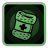Обучение первой помощи
Вы получаете дополнительно 15 к навыку Медицина. При использовании на вас медицинские предметы на 35% более эффективны. Физическая подготовка
Вы получаете дополнительно 10% (Скорость передвижения). Вы получаете дополнительно 30% устойчивости (Нехватка кислорода). 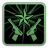Служить и защищать
Вы будете получать +30% опыта и +100% репутации при выполнении миссии - Сопровождение. Качок
Вы получаете дополнительно 10% (Максимальное здоровье). Вы получаете дополнительно 25% (Сила ближнего боя). Военные истории
В конце каждого раунда, в котором вы убили не менее 3 врагов, в ваш инвентарь добавляется Собрание военных историй. Прочтение повышает навык Оружие, в зависимости от уже имеющегося у читателя навыка и от качества книги. |
|
Учебка
Вы будете получать +50% опыта, пока не наберёте 5 очков таланта. Когда у вас будет 5 или более очков таланта, вы получите: +15 Бонусный навык оружия. По уставу
По завершении хотя бы одной миссии ваша команда получает дополнительно 1250 кредитов и 200 опыта за каждого захваченного живым пленного-человека на борту вашего корабля, максимум - 2500 кредитов и 400 опыта. 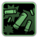Не нарывайся
Доступен рецепт: Патронташ, Разрывная пуля. 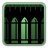Эксперт по боеприпасам
Доступен рецепт: Магазин для ПП, Патрон для дробовика. 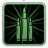Оружейник
Созданное вами оружие на 1 выше качеством. Доступен рецепт: Дробовик, Пистолет-пулемёт. |
| НЫРЯЛЬЩИК | БОЕЦ | СТРЕЛОК |
|---|---|---|
|
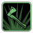Абордажная команда
Доступен рецепт: Абордажный топор, Гидрокостюм, Гарпунное электроружьё. |
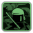Набор для умиротворения
Доступен рецепт: Автоматический дробовик, Грозовиевый дротик для электрошокера, Полицейский щит. |
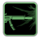Автоматчик
Вы наносите на 10% больше урона из штурмовой винтовки. Доступен рецепт: Штурмовая винтовка, Магазин штурмовой винтовки, Ружьё, Патрон для ружья. |
|
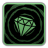Мусорщик
Впервые открыв контейнер вне своей подлодки, вы с вероятностью 25% найдёте дополнительные предметы.
Убийца
Ваши атаки гарпуном становятся на 25% сильнее. В открытом море ваши атаки гарпуном становятся на 50% сильнее. |
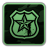Патрульный
Оглушение действует на 25% сильнее. Вдвое эффективнее против монстров внутри подлодки.
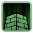Каменная стена
Когда вас атакуют, вы получаете +25% устойчивости к физическому урону и +25% устойчивости к оглушению на 4 сек. |
Спецназовец
При использовании оружия дальнего боя в приседе рассеивание уменьшается на 70%, и вы наносите на 10% больше урона.  Сила напарника Сила напарникаПока вы обслуживаете орудие вместе с другим членом команды, атаки у вас обоих становятся на 20% мощнее. Эффект распространяется только на ближайшего члена вашей команды. |
|
Дерзкий дельфин
Вы получаете дополнительно 25% (Скорость плавания).
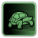Спокойная черепаха
В воде вы получаете на 20% меньше урона от атак. |
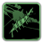Суровый моряк
Восстановление после кровотечения происходит намного быстрее. (Вместо стандартных -0,1/c будет -1,1/с)
Неумеренное кровопускание
Кровотечение наносит на 100% больше урона. |
Суперпорох
Взрывы на 20% больше в радиусе и наносят на 10% больше урона. Созданная вами взрывчатка на 1 выше качеством.
Торговец оружием
Вы переносите боеприпасы для орудий на 25% быстрее. Вы ходите на 20% (быстрее) при прицеливании. |
|
Спецотдел
Доступен рецепт: Тепловизор. Враги с полным здоровьем получают вдвое больше урона (не из орудий). |
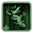Неумолимый
Когда ваше здоровье будет опускаться ниже 0, вы будете оставаться в сознании, а ваши атаки будут на 25% сильнее в течение 15 сек. Этот эффект может накладываться лишь один раз за жизнь. |
Военачальник
Вы наносите на 10% больше урона из стрелкового оружия каждому врагу рядом. Максимум - 50%. Доступен рецепт: ТП, Магазин для ТП. |
Таланты Механика 
|
Обитатель камеры балласта
Вы задерживаете дыхание на 50% дольше. Инженер по двигателям
Макс. скорость двигателей подлодки получает +2,5% за ваш уровень, максимум - 20%. Если таких талантов несколько, эффект не суммируется. Механик-маньяк
Вы будете получать разные награды за ремонт определённого количества механических устройств: - 12: Даёт +10 к навыку "Бонусный навык механика" и 500 ОО. - 20: Улучшает насосы подлодки до 1 ур. - 40: Навсегда увеличивает скорость ремонта механических приборов на 50% 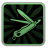Универсал
Вы наносите на 50% больше урона гаечными ключами и ломами. 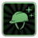Техника безопасности
Доступен рецепт: Страховочные ремни. Сбор добычи
Даёт на 30% больше опыта за задания типа "Добыча". Также повышает на 50% скорость плавания и на 10% устойчивость к физическому урону внутри обломков. |
|
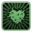Железный человек
Доступен рецепт: Железный шлем, Самодельный бронежилет.  Модульный ремонт Модульный ремонтДоступен рецепт: Мультитул. Улучшение подлодки: Модульный ремонт, до 1 ур. Идеальный механизм
Фабрикаторы и деконструкторы работают на 50% быстрее. Если таких талантов несколько, эффект не суммируется. Надуть и сбросить
После вашего ремонта Максимальный поток насосов получает +10%. Улучшенная модель
Доступны улучшения корпуса подлодки на один уровень выше. Если таких талантов несколько, эффект не суммируется. |
| СБОРЩИК ХЛАМА | МАШИНИСТ | БУЯН |
|---|---|---|
|
Шахтёр
При деконструкции руды вы с вероятностью 20% получите вдвое больше продукта. Отделение руды резаками происходит на 100% быстрее. |
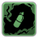Ремонтник корпуса
Доступен рецепт: Граната с монтажной пеной, Ручной монитор статуса. Скорость ремонта корпуса +25% |
Я тот самый человек
Вы наносите на 20% больше урона ударами тупых предметов (оружием ближнего боя). Вы получаете дополнительно 20 к навыку Бонусный навык оружия. Доступен рецепт: Тяжёлый гаечный ключ. |
|
Массовое производство
При изготовлении предметов с вероятностью 40% не расходуется один из ингредиентов.
Остаточные отходы
Деконструкция предмета с вероятностью 20% даёт вдвое больше материалов. |
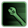Экспресс-ремонт
После ремонта механического прибора вы двигаетесь на 20% быстрее в течение 10 с. Вы ремонтируете механические приборы вдвое быстрее.
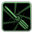Самоделкин
Ремонтируя механические устройства, вы восстанавливаете их исправность на 40% лучше максимального. |
Поднятие тяжестей
Вы на 20% быстрее переносите металлические ящики или артефакты.
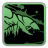Борьба с рапторами
Вы наносите на 50% больше урона грязевым рапторам в ближнем бою. Вы получаете дополнительно 10% (Устойчивость к физическому урону). |
|
Гений утилизации
Деконструкция хлама даёт вдвое больше материалов. Впервые открыв контейнер в обломках корабля, вы с вероятностью 20% найдёте дополнительный хлам.
Обслуживание инструментов
Качество инструментов, создаваемых всеми членами команды, на 1 выше. |
Пусть течёт
Вы можете создавать портативные насосы и устанавливать их куда надо. На вашу подлодку можно установить не больше 2 таких предметов. Доступен рецепт: Портативный насос. |
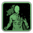Берсерк
При уровне здоровья ниже 50% вы получаете следующее: Исходящий урон в ближнем бою +20%
Удаль
При уровне здоровья ниже 50% вы получаете следующее: Устойчивость к физическому урону +20% |
|
Железный шторм
Подлодки уровня 1 и уровня 2 можно улучшать как подлодки уровня 3. Доступен рецепт: Хлам-пушка. |
Робототехника
Создаёт мощный (но хрупкий) дрон для прикрытия. Одновременно можно активировать до 2 защитных ботов на команду. Доступен рецепт: Защитный бот, Боеприпасы защитного бота. |
МЕХаник
Вы двигаетесь на 25% быстрее в экзокостюме. Доступен рецепт: Экзокостюм. |
Таланты Инженера
|
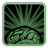Яйцеголовый
Скорость изучений навыков +100% Заземление
Вы получаете дополнительно 10 к навыку Электрика. Вы получаете дополнительно 20% устойчивости (Ожог). Фанат соединений
Вы будете получать разные награды за ремонт определённого количества электрических устройств: - 30: Даёт +10 к навыку "Бонусный навык электрика" и 500 ОО. - 50: Улучшает кабельные коробки подлодки до 1 ур. - 100: Навсегда увеличивает скорость ремонта Электроприборов на 50% Монитор наблюдения
Доступен рецепт: Пульт реактора. Инженер станции
Даёт на 30% больше опыта за восстановление работы маяка. Также даёт +50% к навыку "Скорость ремонта" и +50% к навыку "Скорость ремонта корпуса" при нахождении на радиомаяке. |
|
Агрессивная инженерия
Вы наносите втрое больше урона отвёртками. Весёлое расщепление
Созданные вами топливные стержни на 1 выше качеством. Музыкальная пауза
Когда вы играете на гитаре в течении 10 с. или дольше, Скорость ремонта у вас и союзников рядом повышается на +25% на 60 с. Коллекция образцов
Доступен рецепт: Грузовой скутер. Подлодка вещей
Для изготовления схем на базе ППВМ и кабельных коробок вам нужно гораздо меньше материалов. |
| ИНЖЕНЕР-ОРУЖЕЙНИК | ЭЛЕКТРИК | ФИЗИК |
|---|---|---|
|
Военное применение
Вы получаете дополнительно 20 к навыку Оружие. Доступен рецепт: Обеднённое топливо, Ящик с боеприпасами с обеднённым топливом для магнитной пушки. |
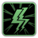Ремонт сетей
Доступен рецепт: Ручной электромонитор. Вы получаете дополнительно 50% (Скорость ремонта). |
Неуёмное любопытство
Двери открываются на 50% быстрее. Ваши атаки с ломом на 100% сильнее. |
|
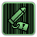Гонка вооружений
Доступен рецепт: Магазин для ПП с обеднённым топливом, Патрон револьвера с обеднённым топливом.
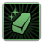Крепкий кулак
Доступен рецепт: Закалённый гаечный ключ, Закалённая отвёртка, Закалённый нож ныряльщика. |
Пироманьяк
Вы наносите на 25% больше урона огнём. И вдвое эффективнее против флоры балласта. Доступен рецепт: Огнемёт.
Безграничная сила
Созданные вами батареи на 1 выше качеством. Даёт +10% к ёмкости батарей и суперконденсаторов. |
Жужжалка
Максимальная мощность вашего реактора увеличена на 10%.
Давилка
Эффективность использования топлива у вашего реактора увеличенна на 20%. |
|
Искусный оружейник
Созданное вами оружие на 1 выше качеством. |
Лучше нового
После вашего ремонта состояние электроприборов ухудшается на 30% медленнее. |
Опасная зона
Вы получаете на 50% устойчивости к лучевой болезни, когда носите защитный комплект. Доступен рецепт: Нестабильный грозовиевый топливный стержень. |
|
Крайняя мера
Ядерные снаряды и ядерные глубинные бомбы гораздо дешевле создавать из неизрасходованных топливных стержней. Доступен рецепт: Быстрый ускоритель распада. |
Электромаг
Если вас не атакуют в течение 10 сек., следующая атака ближнего боя против вас будет на 80% слабее, и атакующий получит оглушение на 4 сек. Доступен рецепт: Дуговой разрядник. |
Кандидат наук по ядерной физике
Ваши атаки с ломом на 200% сильнее. Не суммируется с эффектом, который даёт Неуёмное любопытство. Доступен рецепт: УЗК. |
Таланты Врача 
|
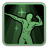Образцовое здоровье
Вы получаете дополнительно 20% (Максимальное здоровье). Медстраховка
Если во время задания ваше здоровье упадёт ниже 30%, вы получите 100 кред. Медицинские предметы можно купить на 10% дешевле. 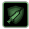Сопротивление
Вы получаете дополнительно 50% устойчивости (Наркотическая зависимость). Вы получаете дополнительно 50% устойчивости (Химическая зависимость). Все, кто надо, живы
Медицинские предметы становятся на +10% мощнее, если их применять не к помощникам. Лечение помощников будет на 20% менее эффективно. Самосохранение
При использовании на вас медицинские предметы на 20% более эффективны. Остаться в живых
Проведение реанимации членами экипажа устраняет нехватку кислорода на 20% эффективнее. |
|
Донор крови
После завершения хотя бы одной миссии вы получаете в инвентарь один пакет с кровью. Не умирай!
Ваши реанимационные действия гораздо эффективнее обычных. Перенос на плече
Вы можете перетаскивать персонажей без потери скорости. 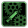Медицинский компаньон
Доступен рецепт: Гарнитура с инжектором. Без давления
Доступен рецепт: Стабилизатор давления. |
| КСЕНОЛОГ | МЕДИК | ХИМИК |
|---|---|---|
|
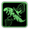Сборщик генов
Из останков монстра вы с вероятностью 20% получите генетический материал. |
 Медицинская экспертиза Медицинская экспертизаДаёт +30 к навыку медика. Ваши повязки более эффективны. |
Чумной доктор
Вы получаете доволнительно 50% устойчивости (Ожог кислотой). Доступен рецепт: Европовка, Алая кислота. |
|
Грязные дела
При приёме инопланетной крови у вас на 50% слабее психоз. Крупные существа дают +1 Инопланетная кровь.
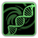Спайщик генов
Очистка генетических материалов дополнительно улучшает их потенциал на 10%. |
Экстренная помощь
Помощники могут перетаскивать персонажей без потери скорости. Если кто-то из команды без сознания, вы движетесь на 40% быстрее.
Медицинская помощь
Помощники в том же отсеке получают +30 к навыку медика. |
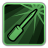Служба доставки
Доступен рецепт: Улучшенный шприц-пистолет.
Лабораторные контакты
Химикаты можно купить на 30% дешевле. Вы создаете медицинские предметы на 100% быстрее. |
|
Подпольные гены
Генетические материалы продаются в магазинах исследовательских станций и городов. Вы можете продавать генетические материалы на 50% дороже.
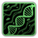Настройка генов
Все члены команды получают на 10% больше здоровья и движутся на 5% быстрее. |
Подводный доктор
Применяемые вами медицинские предметы на 25% более эффективны.
Витаминные добавки
Если вы примените лекарства к моюзнику, он получит +20% здоровья до конца задания. |
Суперсолдаты
Ваши усиления действуют на 25% дольше. Доступен рецепт: Боевой стимулятор.
Ну и вонь!
Кислотные ожоги наносят на 15% больше урона. Доступен рецепт: Кислотная граната, 40-мм кислотная граната. |
|
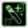Генетический гений
При сочетании разных типов генетических материалов их загрязнение на 99% менее вероятно. Доступен рецепт: Улучшенный спайщик генов. |
Чудотворец
Члены команды рядом не погибают от ранений, если не сдаются. на вас не действует "Сотворение чуда". |
Макродозы
Ваши усиления действуют на 25% дольше. Яды действуют на 100% сильнее. Доступен рецепт: Гормональный усилитель. Этот прибор даёт постоянное улучшение характеристик. |
Таланты Помощника
|
Дармоед
Потеряно 40% (Скорости ремонта). Вы теряете 15 по всем навыкам. Союзники рядом с вами ремонтируются на 25% быстрее и получают дополнительно 10 ко всем навыкам. Почтальон
Даёт на 25% больше опыта и на 250 больше денег за задания типа "Груз". Мул
Размер штабеля в вашем инвентаре увеличивается на +2 для материалов, которые можно штабелировать. Тормоз
Если ваш уровень на 2 или больше ниже самого высокого уровня в вашей команде, вы получаете на 100% опыта за миссии. Бегство
Вы передвигаетесь на 10% быстрее. Когда вас атакуют, это значение повышается до 30% на 5 сек. 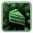Стартовый квест
Выполните задание, чтобы получить усиление соответствующего навыка и опыт: - Убить ползуна (+400 ОО и +10 Бонусный навык оружия) - Починить кабельную коробку (+300 ОО и +10 Бонусный навык электрика) - Заварить течь (+200 ОО и +10 Бонусный навык механика) |
|
Всё своё ношу с собой
Доступен рецепт: Рюкзак. Долговое рабство
Нанять помощников стоит на 20% меньше. Другие помощники получают +10% опыта, который накапливается вплоть до 50%. Вдохновляющий мотив
Когда вы гудите в клаксон, союзники рядом получают +15 ко всем навыкам на 10 с. 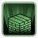Мастер дженги
Взаимодействие со шкафчиками на подлодке постоянно увеличивет размер штабеля Этих шкафчиков на +4. Если таких талантов несколько, эффект не суммируется. Обмен опытом
После завершения задания члены экипажа с минимальным уровнем получают на 50% больше опыта. 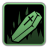Мститель
После вашей смерти товарищи по команде получают 30% устойчивости к физическому урону на 120 с. |
| ПОМОЩНИК | СТАЖЕР | КЛОУН |
|---|---|---|
|
Список ожидания
В ожидании реанимации жизнь покидает вас на 75% медленнее. |
Стажёр
Выберите одну профессию для стажировки и получите усиление связанного с ней навыка. |
Зачисление в клоуны
Пока вы носите полный костюм клоуна, вам доступна Сила клоуна. Сила клоуна позволяет: Скорость передвижения +10% Устойчивость к физическому урону +5% Доступен рецепт: Клоунский сундук. |
|
Безвредный
Враги не заметят вас, если вы упадёте и будете лежать дольше 2 сек.
Вкусная цель
Враги в первую очередь атакуют вас. Вы получаете на 15% меньше физического урона. |
Странник
Вы и все члены команды с профессией, по которой вы стажируетесь, получат 10 основного навыка этой профессии и будут повышать этот навык на 50% быстрее.
Система логистики
Доступен рецепт: Ручной искатель предметов, Самодельные полки. На вашу подлодку можно установить не больше 3 таких предметов. |
Водный хулиган
Доступен рецепт: Подводная маска клоуна. Сила клоуна позволяет: Скорость плавания +50% |
|
Правильное питание
Уменьшает количество потерянных навыков при смерти на 100%, а также на 75% - при выборе немедленного воскрешения вместо ожидания.
Страховка
Если вы погибаете от недружественных причин во время миссии, ваша команда получает по 200 кредитов за каждую миссию, в которой вы участвовали со времени последней гибели. |
Мерзкий предатель
Вы и все члены команды с профессией, по которой вы НЕ стажируетесь, выполняют ремонт и сварку, а также повышают навыки на 20% быстрее.
Верный помощник
Вы и все члены команды с профессией, по которой вы стажируетесь, изготавливают предметы на 1 выше качеством. |
Классный клаксон
Гудок клаксона с вероятностью 50% оглушает существ рядом на одну секунду.
Клоун-псих
Сила клоуна позволяет вам быстрее атаковать оружием ближнего боя - чем сильнее ваш психоз, тем быстрее, до 150%. |
 Везде друзья Везде друзьяВы делаете невылупившихся рапторов дружелюбными в медицинском фабрикаторе. Одновременно можно активироть до 2 на команду. Доступен рецепт: Яйцо ручного раптора. |
Выпускной
Вы получаете все таланты случайной ветки специализации дерева талантов профессии вашей стажировки. Доступен рецепт: Церемониальный меч. |
Истинный талант
Ударив потерявнего сознание союзника игрушечным молотком, вы оживите его, но у него будет Боевой стимулятор в течение 15 с. Требуется сила клоуна. Доступен рецепт: Веселитель-3000. |
Гормональный усилитель 
Он даёт один из талантов из таблицы ниже, за исключением тех, которые относятся к профессии цели. Этот предмет можно использовать несколько раз, что позволяет получить до 15 талантов из списка (по 3 на каждую профессию, к которой цель не относится). Требуемый уровень навыка «Медицина» составляет 60, однако его применение всё равно даст талант. Если у пользователя нет необходимого уровня навыка, есть вероятность провалить проверку навыка. В этом случае таланты «Одинокий волк», «Патрульный», «Подводный доктор», «Неуёмное любопытство», «Борьба с рапторами» и «Список ожидания» будут исключены из списка возможных талантов. Приобретённые таланты являются постоянными и не исчезают даже после смерти.
| Профессия | Таланты |
|---|---|
|
Дарование
Скорость освоения навыков +50% На дно
Находясь на своей подлодке, которая на 50% затоплена, вы получаете +50% к скорости плавания и +50% к скорости ремонта корпуса на 60 сек. Одинокий волк
Если рядом нет членов команды, вы получаете: Устойчивость к физическому урону +20% Устойчивость к оглушению +20% Исходящий урон в ближнем бою +20% |
|
|
Патрульный
Оглушение действует на 25% сильнее. Вдвое эффективнее против монстров внутри подлодки. Физическая подготовка
Вы получаете дополнительно 10% (Скорость передвижения). Вы получаете дополнительно 30% устойчивости (Нехватка кислорода). Качок
Вы получаете дополнительно 10% (Максимальное здоровье). Вы получаете дополнительно 25% (Сила ближнего боя). |
|
|
Борьба с рапторами
Вы наносите на 50% больше урона грязевым рапторам в ближнем бою. Вы получаете дополнительно 10% (Устойчивость к физическому урону). Обитатель камеры балласта
Вы задерживаете дыхание на 50% дольше. Шахтёр
При деконструкции руды вы с вероятностью 20% получите вдвое больше продукта. Отделение руды резаками происходит на 100% быстрее. |
|
|
Яйцеголовый
Скорость изучений навыков +100% Заземление
Вы получаете дополнительно 10 к навыку Электрика. Вы получаете дополнительно 20% устойчивости (Ожог). Неуёмное любопытство
Двери открываются на 50% быстрее. Ваши атаки с ломом на 100% сильнее. |
|
|
Образцовое здоровье
Вы получаете дополнительно 20% (Максимальное здоровье). Сопротивление
Вы получаете дополнительно 50% устойчивости (Наркотическая зависимость). Вы получаете дополнительно 50% устойчивости (Химическая зависимость). Подводный доктор
Применяемые вами медицинские предметы на 25% более эффективны. |
|
|
Бегство
Вы передвигаетесь на 10% быстрее. Когда вас атакуют, это значение повышается до 30% на 5 сек. Мститель
После вашей смерти товарищи по команде получают 30% устойчивости к физическому урону на 120 с. Список ожидания
В ожидании реанимации жизнь покидает вас на 75% медленнее. |